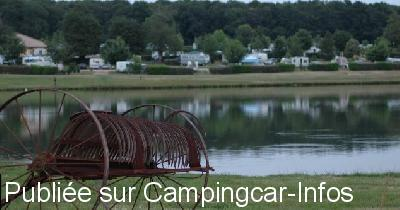

AC = Camping acceptant les camping-cars de :
BOUSSAC
(N° 137)
Accès/adresse :
Route de la Châtre
Camping du Château de Poinsouze ****
23600 BOUSSAC
Camping du Château de Poinsouze ****
23600 BOUSSAC
Latitude : (Nord) 46.37207° Décimaux ou 46° 22′ 19′′
Longitude : (Est) 2.20076° Décimaux ou 2° 12′ 2′′
Tarif : 2015
Emplacement, 2 personnes : 19 € à 44 €
Services :


Piscine
Autres informations :
Ouvert du 12/05 au 11/09
Tél : +33(0)555 650 221
info@camping-de-poinsouze.com
http://www.camping-de-poinsouze.com

Le 15/04/2016 par Camping
de
Rolf Ca.
le 07/11/2007 :
Ich glaube, hier wird ein Platz mit einem Campingplatz verwechselt?
Der 4*C 'Château de Poinsouze' an der D917 (Route de la Chatre) liegt eben am Château. Weist aber in seiner online-Präsentation keinerlei externe Stell-/Übernacht.-Möglichkeit aus!??
siehe auch www.camping-de-poinsouze.com/
Ich glaube, hier wird ein Platz mit einem Campingplatz verwechselt?
Der 4*C 'Château de Poinsouze' an der D917 (Route de la Chatre) liegt eben am Château. Weist aber in seiner online-Präsentation keinerlei externe Stell-/Übernacht.-Möglichkeit aus!??
siehe auch www.camping-de-poinsouze.com/